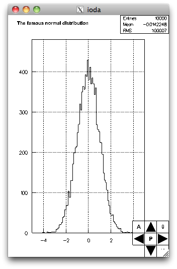
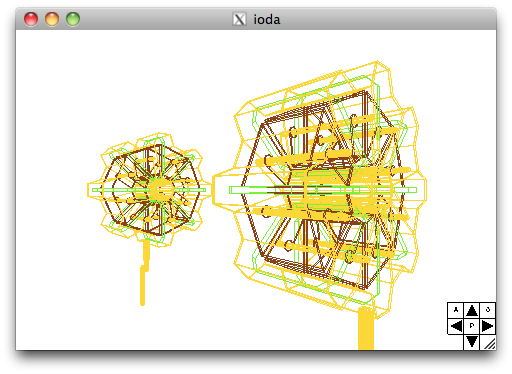

When having a scene (for example with "h/rand"), by returning to the user interface and activating the "cam" button, you map the "camera panel" at the bottom right of the window

The behaviour of the camera panel arrows depend if the scene is a 2D one or a 3D one.
General behaviour is :
-
H bottom-right button : hide the camera panel.
-
0 top-right button : reset camera to the same parameters than at creation of the scene.
-
[A,S] top-left button : A = continous movement. S = step by step movement. When having triggered a continuous movement, you stop it by activating this button or the same arrow button that triggered the movement.
If in plane viewer mode (for exa if viewing 1D histos) :
-
center P + left/right : pane left/right.
-
center P + top/down : pane top/down.
-
center P/Z + top/down : zoom in/out.
If in examiner viewer mode (for exa with exas/ATLAS) :
-
center R/T + left/right : rotate camera left/right.
-
center R/T + top/down : move forward/backward.
-
center P + left/right : pane left/right.
-
center P + top/down : pane up/down.
-
since 1.1, the bottom-left area is a button that permits to toggle the arrows to a "90 degrees" mode. When set, the left/right (up/down) arrows rotates the camera by 90 degrees around the y (x) axis.
On smart devices, when no camera panel is mapped (and then being full screen on the scene), you can move the camera with a paning gesture. If available, pinching issues a zoom and a rotation gesture rotates the camera in the viewing plane.
With some exercice and with :
examples -> ATLAS -> END.fog
you can get :
